Professor Ms. Rossini de Araujo Castro
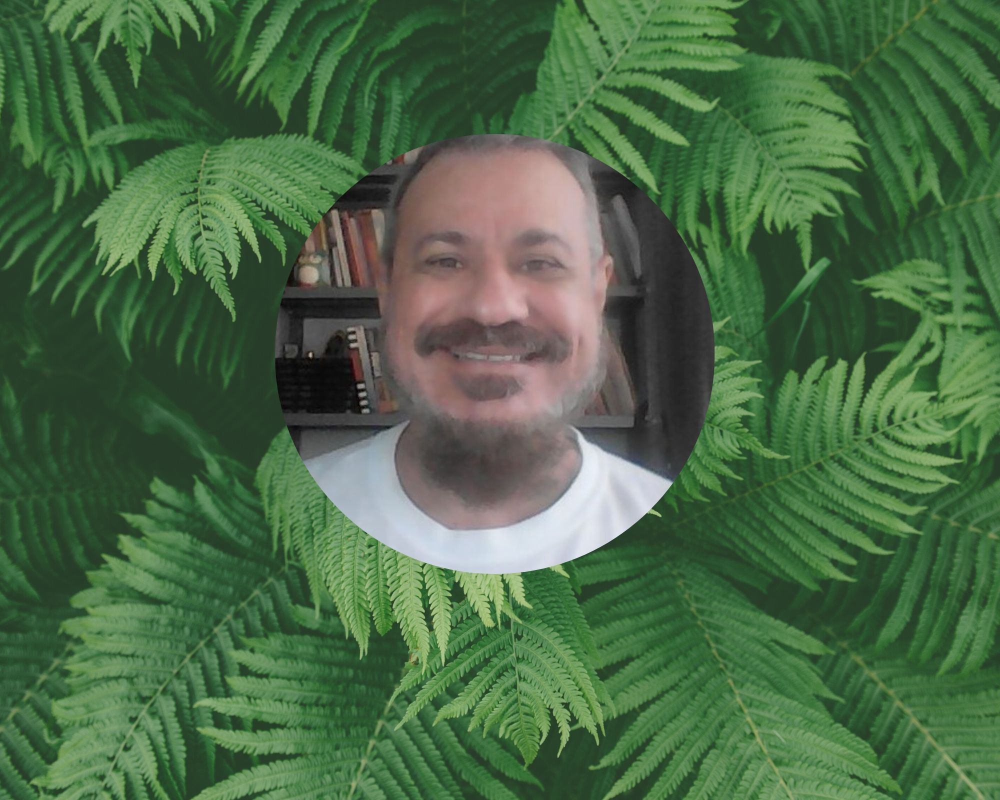Acessar CV: Currículo Lattes
Resumo: Possui graduação em Licenciatura em Educação Artística pela Universidade de São Paulo (2002), graduação em Artes Cênicas pela Pontifícia Universidade Católica do Paraná (1988) e mestrado em Educação, Arte e História da Cultura pela Universidade Presbiteriana Mackenzie (2010).
Manhã de autógrafo na Boblioteca da Floresta com Marcia Fecury e toda equipe de colaboradores. Muito Grato pelo carinho de todos! Rio Branco- Acre, 2016.
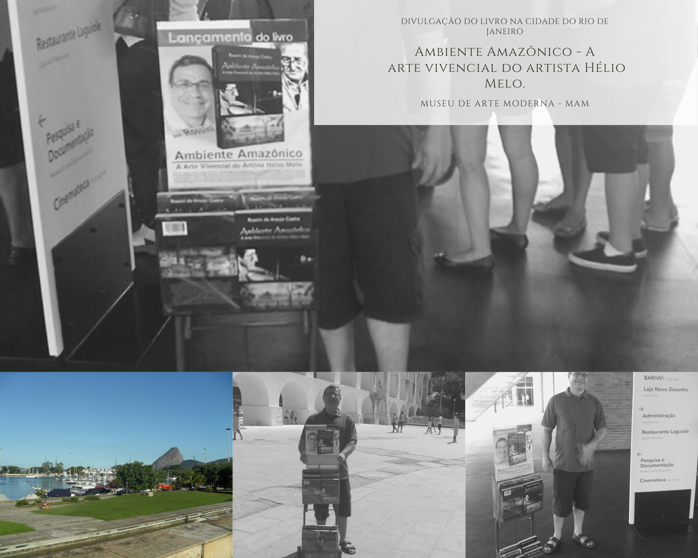divulgacao do livro Ambiente Amazônico - A arte vivencial do artista Hélio Melo. Museu de Arte Moderna, Rio de Janeiro.

Festa de lançamento do livro do Professor Rossini de Araujo Castro que aconteceu no dia 29 de março de 2014. Universidade Presbiteriana Mackenzie, São Paulo -SP.

 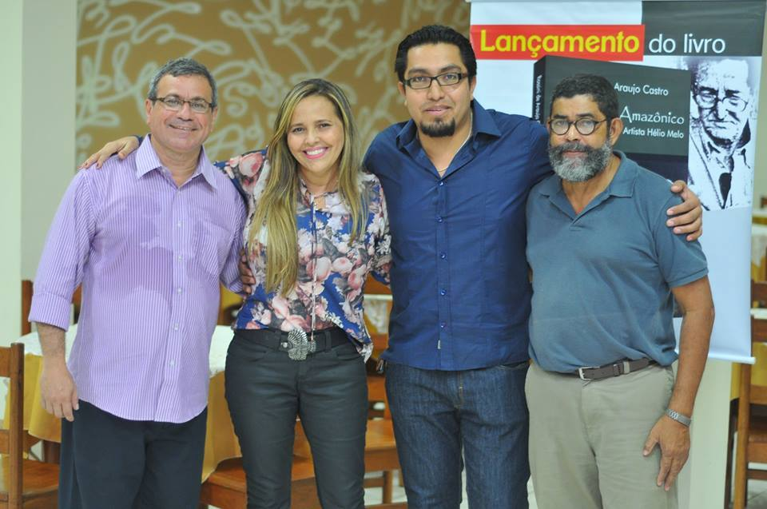
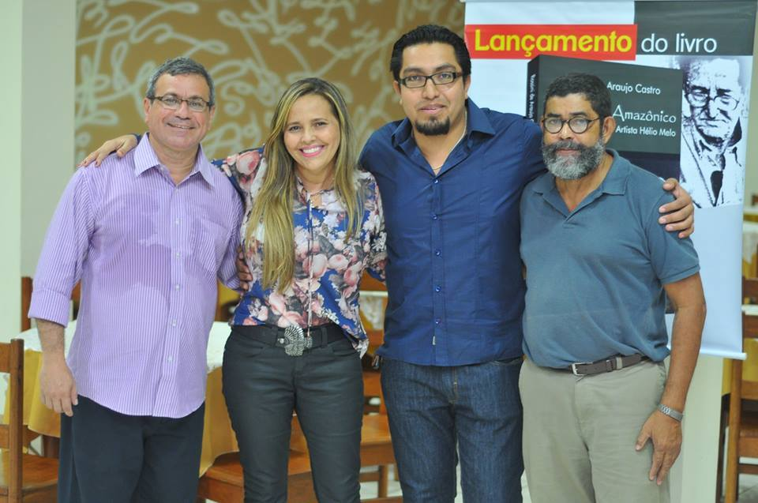
Lançamento do livro Ambiente Amazônico - A arte vivencial do artista Hélio Melo. na cidade de Rio Branco-AC que aconteceu dia 09 de maio de 2014 no Restaurante Cozinharte.
Festa de lançamento do livro do Professor Rossini de Araujo Castro que aconteceu no dia 29 de março de 2014. Universidade Presbiteriana Mackenzie, São Paulo -SP.
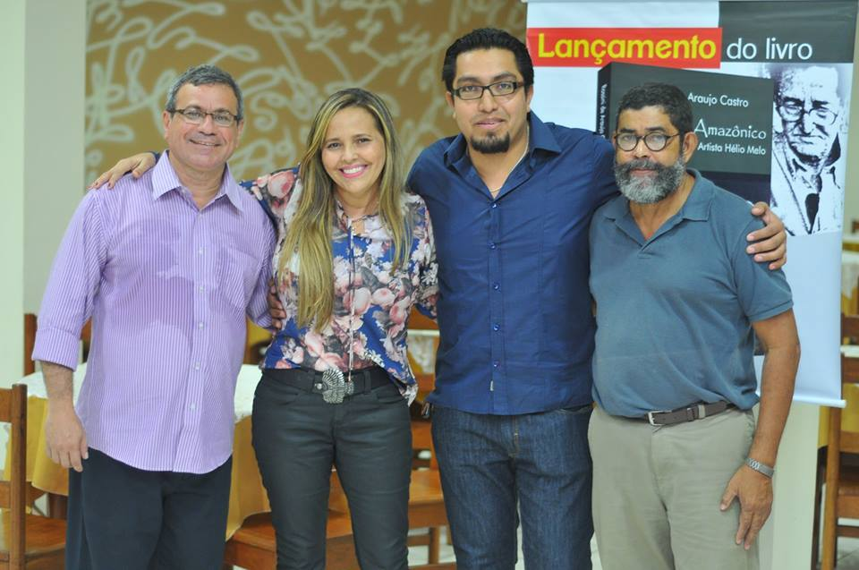
Lançamento do livro Ambiente Amazônico - A arte vivencial do artista Hélio Melo. na cidade de Rio Branco-AC que aconteceu dia 09 de maio de 2014 no Restaurante Cozinharte.
Agradecimentos
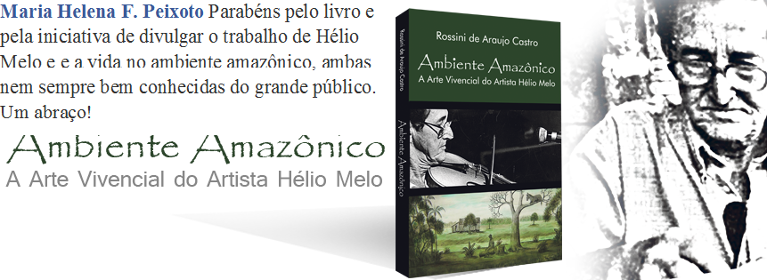
Agradeço
Á minha querida esposa Maria da Conceição dos Santos Castro com quem divido cotidianamente o prazer de pensar, sonhar e amar.
Ao meu orientador, Prof. Dr. Norberto Stori, pela paciência, firmeza e carinho com que, apesar das dificuldades que vivi no processo de pesquisa e escrita, soube me orientar.
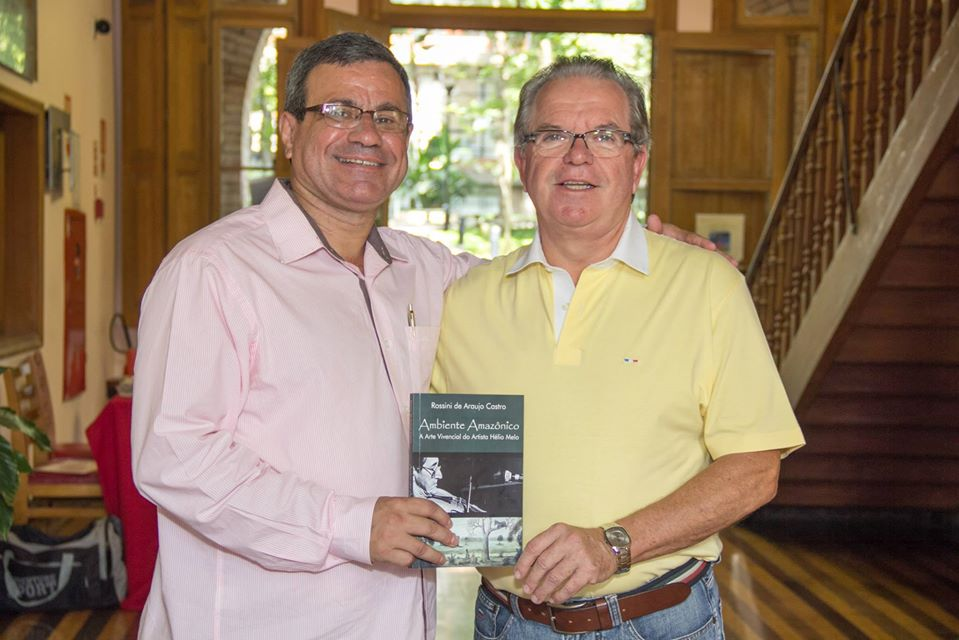À Profa. Dra. Petra Sanchez Sanchez, pela presença, disponibilidade, dedicação e consideração.
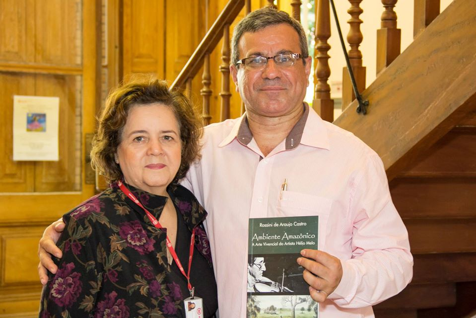Ao Prof. Dr. José Leonardo do Nascimento, pela leitura instigante, cuidadosa e pela valorização do projeto.
Ao Programa de Pós-Graduação em Educação, Arte e História da Cultura.
À Coordenadoria de Estudos e Normas Pedagógicas (CENP), pela ajuda financeira na concessão da Bolsa Mestrado.
A Reginaldo Lopes e todos os funcionários da Escola Estadual Parque Anhanguera, amigos estimados que muito contribuíram para a construção desta dissertação.
A minha amiga, Ana Maria Gorete de Souza Barros, que foi minha guia na cidade de Rio Branco e, como verdadeira fada madrinha, abriu portas que possibilitaram a conclusão deste trabalho. 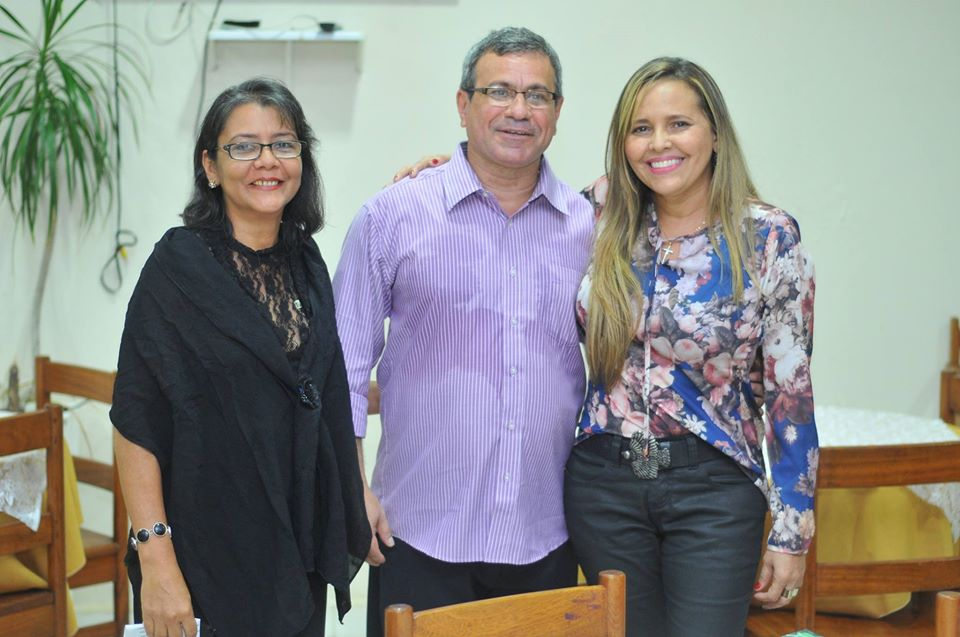
A Fátima Melo, pela sua autorização para fotografar obras e documentos do seu acervo pessoal e pelas longas conversas que muito contribuíram para o desenvolvimento deste trabalho.
A Abrahim Farhat(in memoriam),Dalmir Ferreira, Marcos Afonso, Marcus Vinicius, Carolina di Deus, Danilo de S’Acre, Dinho Gonçalves, Darci Sales, Karla Martins, pela participação no debate que muito ajudou na condução da pesquisa.
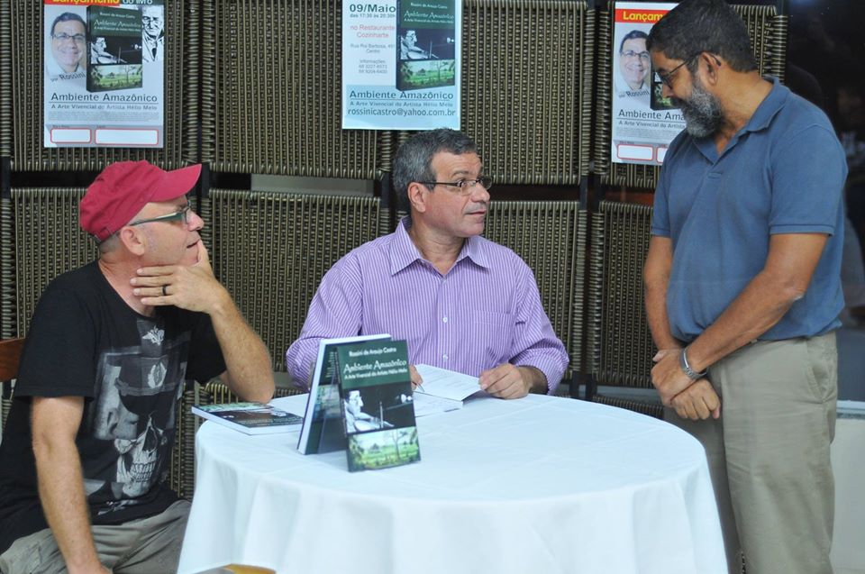Dalmir Ferreira e Danilo D'Sacre no lançamento do livro "Ambiente Amazônico: A arte vivencial do artista Hélio Melo", na cidade de Rio Branco- Acre, 2015.
À Fundação Elias Mansour, pelas imagens cedidas. Ao Gabinete do Governador do Estado do Acre, Memorial dos Autonomistas e Museu da Borracha, pela autorização para fotografar o acervo. Ao Arquivo Histórico Wanda Svevo da Fundação Bienal de São Paulo e a Natália Leoni, pela cessão de imagens.
A Glicério Gomes, Valdenísio Rego, Olívio Botelho, Tião Andrade (Sebastião) e Pedro Vicente da Costa Sobrinho, pelas entrevistas. À Profa. Dra. Maria Helena Peixoto, minha revisora, pela dedicação, capricho e respeito.
A Regina Correia de Araujo e Dinah Araujo Rodrigues pelo apoio e livros cedidos. A Rosângela Castro, Glauco Castro, Antônio Stélio, e Maria Roseney Davila Celestino, pela cessão de material e organização do debate.
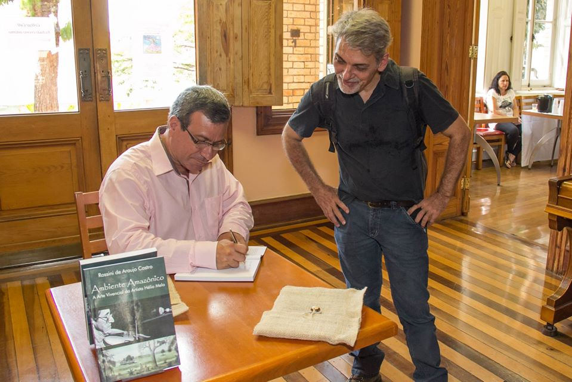